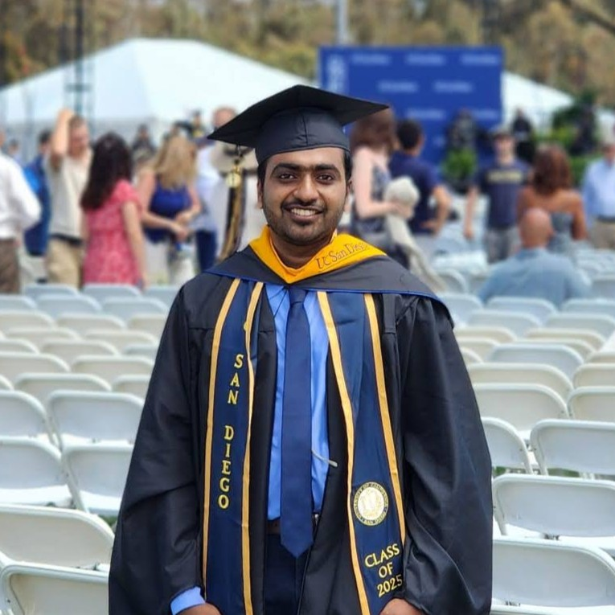
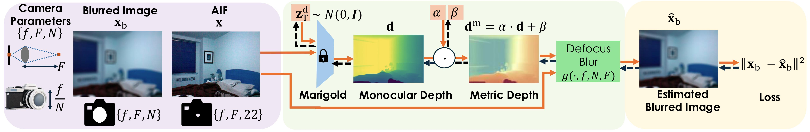

Nikhil Gandudi Suresh
Image Processing and Computer Vision
Email: gsnikhil333@gmail.com // ngandudisuresh@ucsd.edu
| GitHub | Medium | |
| Work Experience | Publications | Projects |

Senior Engineer at Qualcomm, specializing in the performance architecture of Image Signal Processors (ISP). Currently focused on developing latency and memory models to optimize hardware efficiency for next-generation imaging chips. My interest lies at the intersection of algorithm design and hardware constraints.
Work Experience
-
Senior Engineer - Qualcomm (Apr 2025 - Present)
Performance Architecture for Image Signal Processors (ISP)
-
Platform Architecture Intern - Apple (Jun 2024 - Sept 2024)
- Evaluated the optical flow-based motion vector refinement algorithm by implementing hardware constraints and analyzing their impact on coding efficiency using a C-model that simulated the hardware environment.
- Achieved equivalent BD-rate efficiency using only 25% of the computational resources in the optical flow method through targeted optimizations.
-
Associate Staff Engineer - Samsung (Aug 2020 - Aug 2023)
- Led algorithm and firmware development of novel data compression for image sensor’s OTP (One Time Programmable) memory which resulted in 22% higher data storage in the same silicon area.
- Developed C-models of image processing pipeline blocks- used as a reference to validate the hardware.
- Developed and implemented a novel low-power, low-resolution motion detection algorithm for Bayer images. Conducted thorough testing and evaluation, resulting in one of the first low-cost CMOS image sensors supporting motion detection in Always-On (AON) mode.
- Revamped sanity checking of image sensor operating modes by automating the process, resulting in reduction of testing time by 85%.
Publications
-
NeurIPS Spotlight Paper - Repurposing Marigold for Zero-Shot Metric Depth Estimation via Defocus Blur Cues
Chinmay Talegaonkar, Nikhil Gandudi Suresh, Zachary Novack, Yash Belhe, Priyanka Nagasamudra, Nicholas Antipa

We capture two images of a scene from the same viewpoint using a camera focused at a fixed distance: a sharp, all-in-focus image (using a high F-stop number) and a defocused image (using a lower F-stop number to introduce blur). Given the sharp image and an initial learnable noise vector representing depth, the Marigold framework estimates a relative depth map. Importantly, Marigold itself is a fixed, training-free framework—its architecture and operations do not change during optimization. The estimated relative depth is then converted to metric depth via an affine transformation with learnable parameters. Using the sharp image, the estimated metric depth, and known camera parameters, we synthesize a defocused image using a differentiable forward model of defocus blur. Training is guided by minimizing the L2 loss between the synthesized defocused image and the actual captured defocused image. This loss is backpropagated to update the learnable noise vector and affine transformation parameters, enabling the recovery of scene depth without training the Marigold model itself.
-
Efficient Compression Technique For Large Size Binary Sparse Matrix Using Modified Run Length Encoding For Memory Constraint Embedded Systems
Nikhil Gandudi Suresh, Puneet Pandey, Manjit Hota, Manish Goel
Reserved tokens for run-lengths longer than range supported with a given number of bits
Projects
-
Star Trail Reversal

Astrophotography offers a glimpse into the universe but poses challenges due to low-light conditions and image degradation. Long exposure times are needed to capture faint objects, but this often leads to motion blur, or 'star trails,' caused by Earth's rotation. While star trails can be artistic, the goal is usually to minimize them. Mechanical tracking mounts are traditionally used to counteract Earth's rotation but can be costly for beginners. With advances in smartphone cameras, anyone can capture stars, and the focus is now on using computational imaging to remove star trails while preserving the visibility of stars in long-exposure shots.